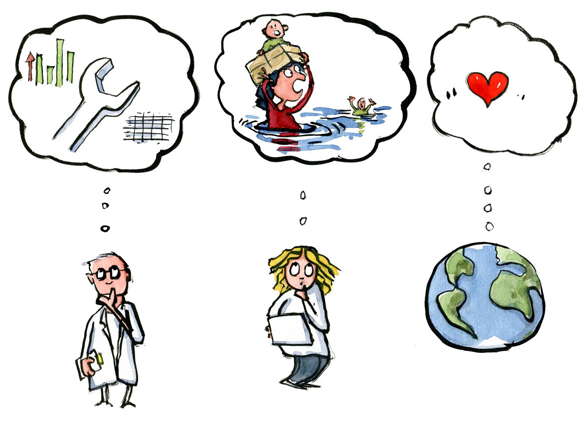
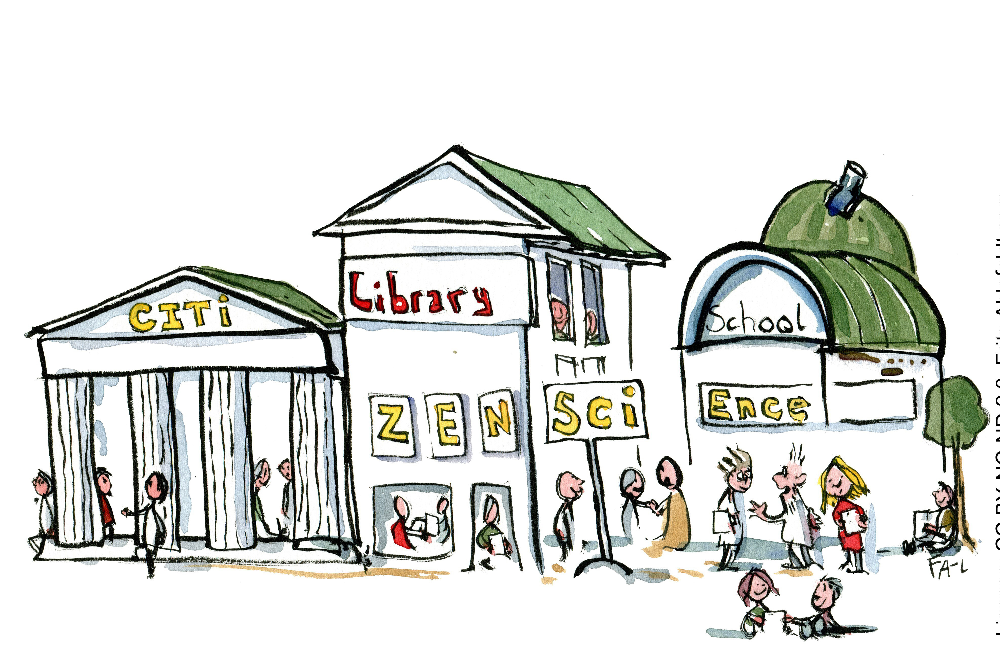

This project plan is a generic guide on how to run the practical side of a citizen science project with regards to planning and governance. It is based on the condition that a researcher or Principal Investigator (PI) leads the project. Assisting the PI is a Project Manager (PM), who is responsible for practicalities in close dialogue with the PI. The role of the PM is sometimes defined as Community Manager, based on the scope and communication of the project. Library staff in many ways are suited for the role as PM or project coordinator.
By Line Laursen, University of Southern Denmark, e-mail: linel@bib.sdu.dk and Thomas Kaarsted, University of Southern Denmark, ORCID iD: 0000-0001-6796-5753 e-mail: thk@bib.sdu.dk Article DOI: 10.25815/r3nj-fd31. The Project Planning guide stems from the work at SDU and the templates and tools we offer.
It’s important that this generic plan is supplemented with e.g., a GANNT chart for organisational and time managing purposes, as well as other helpful tools such as a stakeholder analysis, communication plan and risk analysis. In some cases, the project plan cannot be outlined until funding is applied for and awarded. This guide does not cover that. Furthermore, if you are venturing in a multi-partner or EU project, this guide is hardly sufficient. It does also not take into account citizen-led or -initiated projects.
The project plan
Work on a citizen science project can roughly be divided into three phases. The BEFORE (step 1-5) where the project is initiated and planning is carried out. The DURING (step 6-8) where the project goes public. The AFTER (step 9) where evaluation, analysis, scientific outcome, and communication to and with participants is carried out.
BEFORE
Step 1: Definition of goal(s)
The overall outcome of the project is defined. This should provide a clear picture of what the researcher wants to investigate, who has an interest in participating and the goal(s) of the project. At this point, common ground is laid between the PI and PM in a dialogue with indispensable stakeholders, optimally including citizens. Which research objective or perhaps question is covered? The overall goals could be e.g.
What is the research objective? How will it be investigated or expanded?
The central elements with regards to public engagement and data collection: What is the motivation and outcome for citizens and potential partners. Already at this point consider: What’s in it for the citizens? This means that the scholar should explain how his/her research relates to citizens’ preoccupations or areas of interest. An alternative approach would be to involve citizens in the definition of the research question.
Internal goal setting: Aligning the goals and roles between PI, PM, administration, possible partners, and citizens.
Step 2: Stakeholder analysis
In order to operationalize the objective and goals, a stakeholder analysis could be carried out. We suggest this template in order to identify stakeholders and possible partners. Stakeholders can be very varied depending on the project and cover institutions, organizations, groups, or individuals that could have an interest or stake in the outcome or goals of the project. Stakeholders could also be researchers, peers, students or pupils (in which case the project could have a learning component).
After identifying stakeholders, a dialogue is established and stakeholders are onboarded. They should help form the project and outline their role. In this phase, ‘must be’ stakeholders who are critical for the outcome of the project are identified.
Citizens, of course, are at the core of every citizen science project. The steps above focus on organized groups or institutions that represent other citizens. This is not to marginalize the individual, but to suggest a structured approach. Individuals are also reached through the communication plan.
Step 3: Project goals and milestones
Once the outcome and stakeholders are onboard, the project timeline is defined. We recommend that the PI and PM spend a fair amount of time on a realistic and detailed plan that covers the main deliveries and assess the needed resources. A definition of the tasks and milestones (main deliveries) enables the PM to work based on a critical overview. A detailed timeline should include target dates and identifying risks. As mentioned above, a GANNT chart could be recommended. Also, data management is addressed. See Management of Citizen Science Data onwards. Quite often a research library offers specialists within the field.
Step 4: Assess resources and costs
Once the timeline is complete it’s possible to create an overview of the resources and costs needed. Almost all projects come to fruition after a potential lengthy application and budget process. Otherwise the budget is outlined by the PI and PM in unison. By resources we mean both human and monetary.
Human: Researchers, research assistants, student help, communication, data management, visualization of data, it-infrastructure, and administration.
Monetary: The cost of recruiting citizens, conducting workshops, town hall meetings, building apps, boosting via social media, producing video, buying equipment, tools, as well as travel costs etc.
With regards to human resources are the right competences present? Who does what? Occasionally, communication and community management are underestimated, leaving motivation and thus potentially data and outcome in jeopardy. This is one of the things to be addressed in the risk assessment analysis (step 5). At this point, it’s important to address which target group or groups the project aims at as this is critical for assessing risk vs. outcome with regards to resources. Communication also comes as a premium. No later than this step, a communication plan is devised. A data management plan to overview resources needed for handling data and possible ethical and legal advice should optimally be drafted. You might also explore if the project could be evaluated by learning outcome or science literacy in case pupils or students participate.
Step 5: Risk analysis checklist
Risk analysis can help manage the potential problems and uncertainties in a citizen science project, including, where the a lack of skills or resources could become a problem. The analysis should be done in each phase of the project. There are a vast number of risk analysis matrices, templates and models readily available online. Very few, however, address research projects let alone citizen science projects.
Note: Some citizen science projects e.g. within health science have serious GDPR and ethic considerations. This should be addressed before the project is outlined as a very first step.
Below you’ll find some observations and tips that can help structure your thinking. Risk, in this sense, is not meant as danger. It does not e.g. address unsupervised kids collecting data in a particular environment (although this is certainly a risk). The risk analyses should optimally be carried by the PI and PM together with staff with knowledge and insights in their specialist areas.
Brainstorm on potential troublesome areas. Every area should be included. From research outcome to data collection, to communication, retention and recruitment of citizens, to ethics, GDPR etc. Ask yourself: What could go wrong in this particular area?
What are the potential negative consequences? When the areas are identified, rate them on a scale from 1-5, where 5 is a risk that potentially can shut down the project.
How likely are the risks to happen? Again, rated from 1-5, where 5 is inevitable.
Multiply the numbers and you’ll end up with a list of potential risks rated from 1-25. Again, a score of 25 might close the project.
Make a prioritized list. Which risks should be on the project’s risk list?
How do you handle the risks? Some can be prevented. Then, they go off the list. Others can be remedied, and a Plan B can be ready at hand.
Make a ‘go’ or ‘no go’ decision, the PI and PM in unison.
This abovementioned list is meant for inspiration. If you work with e.g., IT-heavy projects or have data collection with potentially huge GDPR or legal ramifications, your university might be able to advise.
The risk assessment might cause a revision of the project plan (aim, goals, partners, roles and timeline). This is also discussed in step 6.
DURING
Step 6: Recruitment and retainment
For the research and public engagement side of the project to run as smoothly as possible, support from stakeholders and participants are critical. There are several ways to obtain that, but include both groups early in the conversation and co-creation by inviting to:
Workshops and dialogue meetings
Social media communities
Info meetings
Kickoff meetings
Collect suggestions and discuss terminology and research objectives
Again, dialogue is critical which is also at the core of the communication plan. Get ideas, feedback, do post-its sessions, identify possible barriers and potential boosters. Be open and transparent on how you can communicate and include participants and stakeholders in activities, data collection and discussing the results. And where you cannot. The actors in a citizen science project very often have insights, experiences and connections into local communities, which are of high value.
Step 7: Follow up, momentum and communication
When the project partners agree on the project plan, it is distributed to all stakeholders and communicated to participants. In this phase, the communication plan kicks in. Including the ongoing collection, communication and sharing of data.
Depending on the type of project and the complexity concerning partners and stakeholders, status meetings can be held. They should as a minimum include the PI, PM, and key members of the project team. If a steering committee of stakeholders are formed, they are included as well.
Status meetings are for knowledge sharing, for boosting outreach and data collection, and potentially for discussing the milestones and revising the goals. These meetings should provide clear answers to whether the project is progressing as planned. An idea is to take stock of deliverables:
What is planned for the next 2-4 weeks?
Are there any critical deliverables?
Identify possible delays or non-deliverables due to lack of resources.
Step 8: Revision of the project plan
A logical consequence of the follow-up meetings may be revision of the project plan. Just as the partners and participants are visited and revisited, the idea is to establish a cycle where the plan is evaluated. Working with citizen science can be highly motivating and rewarding for both the PI, PM and the project team (and citizens as well). Nevertheless, a potentially large number of partners and elements of co-creation might distort the focus, timeline and goals, thus causing unpredictability. This can potentially cause stress, missed deadlines and demotivation in the team as well as lack of communication with partners and citizens.

AFTER
Step 9: Completion of the project
When the project period has ended or if the goals are met, the PI would want to end the project. In some projects, the co-analysis with participants are discussed or shared with decision makers within the field. In other projects, the PI and the research team analyse the data. In some cases, this might take months, but data and results should still be communicated with participants and data shared as openly as possible. Stakeholders and participants joined the project for a reason. Has the project created some kind of change? Could results influence a change in policy? Did it provide citizens and the research community with new insights?
Upon completion, there might also be a financial wrap and a report to various grant providers. An evaluation based on reach or learning outcomes e.g., science literacy would be completed. In conclusion, the collection of materials, kits and communication materials are done. Some citizen science projects are ongoing and the materials recycled, therefore, resources to secure documentation of the project and its data should be allocated.
Since projects might be repeated (or converged into new projects), it’s recommended to do a memory log with members of the project teams. This can be quite simple, e.g. as a brainstorm. Name five successes or things to repeat. Name five failures or changes if the project were to be conducted again.
An example of recruitment and retainment
Image: SCANPIX
In the SDU citizen science project ‘Our History’, high school students interview elderly citizens on their life experiences with a focus on the changes in the family as an institution, work/life values and socio-economic themes. The project was originally conceived by Professor Klaus Petersen and three students from the SDU Talent Programme. Very early the project reached out to high schools in the region to establish partners. During various steps, a plan to embed the project in the curriculum was conceived. Similarly, the project (via the university library) built a digital learning platform that teachers and students envision will make them capable of conducting interviews in a semi-structured scientific way. Finally, besides the interviews themselves, the students will participate in a poster session where they reflect on the results. The point: It took several steps or loops to design the project with the aim of recruiting and retaining participants. In the end, all interviews are available online.
Stakeholder Matrix
When engaging in a citizen science project, collaboration and dialogue with citizens is at a premium. But which citizens to engage? Filling out a stakeholder matrix could be a useful structured approach to answer this question. The key is that citizens can be reached or included in groups or via institutions from civil society, private sector, government or the education system. Once stakeholders are identified, they might go into the communication plan as target groups.

Identify your own stakeholders from these examples